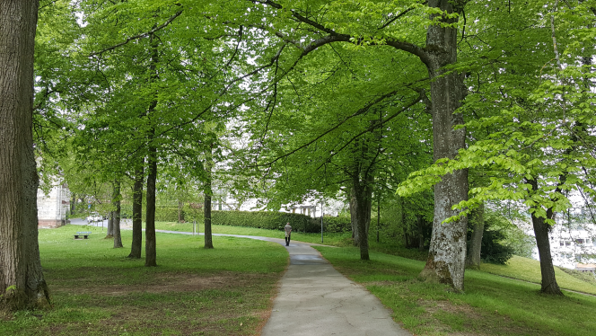

Mein Steckbrief
Ich bin Denny Lang und aktuell 21 Jahre alt.
Geboren bin ich am 31.01.2000. Ich teste gerne Leute damit indem ich sage das ich am letzten ersten des neusten Jahrtausends geboren wurde.
Hobbys von mir sind das Spielen der Gitarre und Kazoo, Singen, Videospiele spielen und das Sammeln von Steinen und Kristallen.
Vor der Corona Zeit hatte ich auch das Hobby einfach Naturfotos aller Art zu machen, aber seitdem das Virus ausgebrochen ist will ich kein unnötiges Risiko eingehen.
Hier ein verkleinertes Beispielbild:
Desweiteren baue/konstruiere ich ab und zu ziemlich bizarre/ungewöhnliche Gegenstände. Da dies aber nicht plötzlich entstehen und viel Zeit in anspruch nehmen kann, bezeichne ich es nicht wirklich als Hobby.
Da meine eigenen Videodateien zu Hobbys durch den im Portfolio erwähnten PC-Softwarefehler nicht abrufbar sind ist hier ein Lizenzfreier Platzhalter:
Mein Studium
Ich studiere seit dem Sommersemester 2020 Medieninformatik an der Hochschule Furtwangen.
Mein bis jetziges Lieblingsfach ist Computergrafik
Weiteres
Hier ein kleiner Remix eines Songs von mir im Absatz- Auf Lautstärke achten!!!